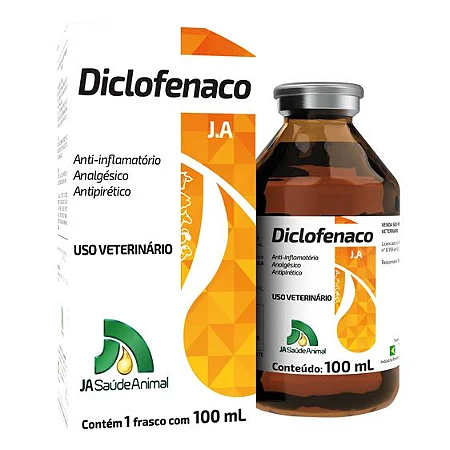
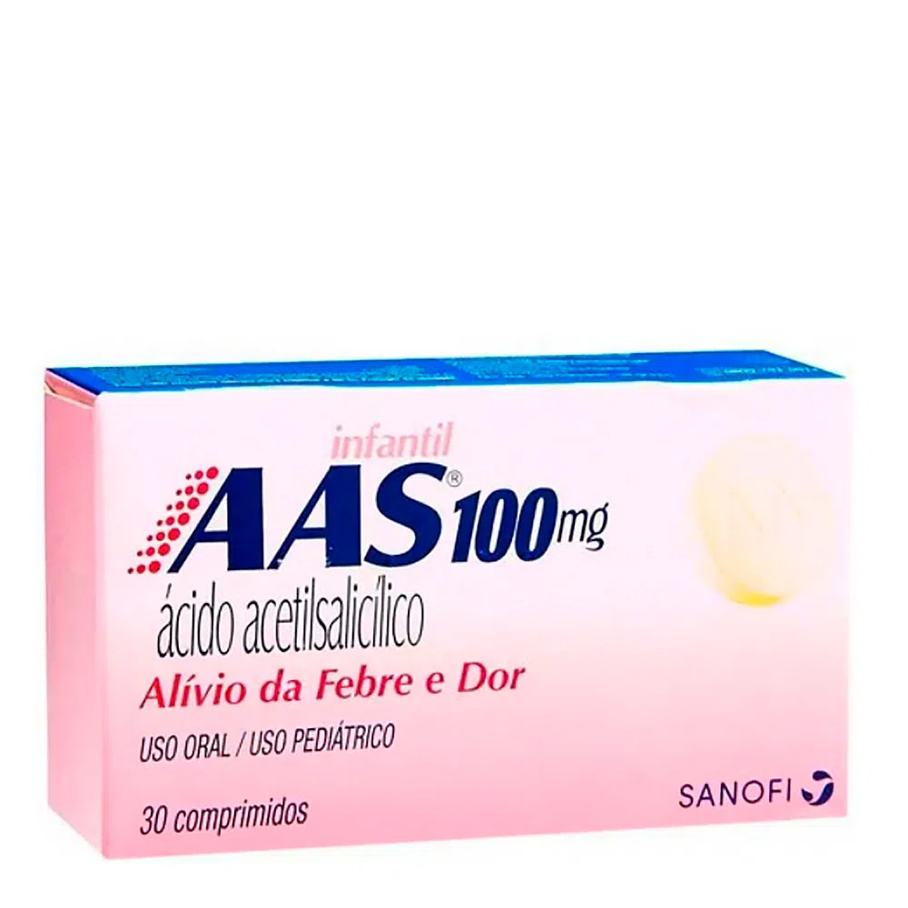
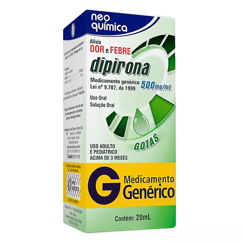

O que são fármacos AINES?
Os anti-inflamatórios não esteroidais (AINEs) estão entre as classes de medicamentos mais prescritos no mundo inteiro, sendo muito eficientes para tratar inflamações a nível osteoarticular (VALLE FILHO, 2013).
Os anti-inflamatórios são classificados em duas classes completamente diferentes entre si: Os anti-inflamatórios esteroides, chamados corticosteroides (AIE), são medicamentos que se baseiam na estrutura dos hormônios (colesterol), diferente do que acontece com o dos AINES (VALLE FILHO, 2013).
Por que podem ser tóxicos para cães e gatos?
Todo medicamento é eventualmente tóxico se administrado de maneira incorreta, sendo necessário conhecer seu mecanismo de ação, vias de administração e posologia, a fim de detectar as manifestações clínicas, garantindo o tratamento adequado da enfermidade sem que haja o risco de intoxicar os animais (BREATHNACH, 2006). Alguns fármacos que são frequentemente usados por pessoas e até mesmo em crianças, podem causar danos irreversíveis à saúde dos animais devido às diferenças metabólicas existentes (XAVIER; MARUO; SPINOSA, 2008).
Os AINEs, medicamentos comuns para inflamação, atuam inibindo a enzima COX, reduzindo assim a inflamação. No entanto, eles também podem causar problemas gastrointestinais e renais e afetar a coagulação do sangue. A sensibilidade a esses efeitos varia dependendo do animal, do medicamento específico usado, da dose e da duração do uso.
Meloxicam
Considerado um anti-inflamatório, o Meloxicam representa a família dos AINEs e a classe dos Oxicans, deriva do Ácido Enólico (SPINOSA, 2006). Representa a primeira geração de inibidores seletivos da COX-2. Primariamente, foi considerado inibidorseletivo da COX-2, quando em estudo in vitro (SILVA, 2006). Com relação aos anti-inflamatório antigos, apresenta efeitos adversos seguros, e ainda, com baixa ação sobre a COX-2 (COSTA, 2007). É encontrado comercialmente como Maxicam, Meloxivet, Movatec e Loxiflan (BARROS E STASI, 2012).
Caprofeno
O Carprofeno representa a classe dos ácidos 2-arilpropiónico, possuindo ação anti-inflamatória, analgésica e antipirética. Seu mecanismo de ação estaria relacionado ao efeito inibitório da COX, onde, um estudo in vitro, realizado em cultura de células caninas, demonstrou a inibição seletiva da COX-2 comparando-a à COX-1. Contudo, o uso em doses terapêuticas expressou rápida inibição, ou nula, da cloxigenase ou da lipoxigenase, em cães e gatos, sendo possível constatar ao seu potencial como anti-inflamatório e analgésico (ACTICARP, RCMV); (RYCARFA, RCMV).
Ibuprofeno
O ibuprofeno é um fármaco anti-inflamatório não esteroidal (AINE), que assim como outros fármacos dessa classe, gera efeitos analgésicos, anti-inflamatórios e antitérmico por se tratar de um inibidor da síntese de prostaglandinas (PAPICH, 2012).
Ele é se deriva do ácido 2- arilpropiónico, sendo utilizado tanto na medicina humana como na medicina veterinária (MCLEAN; KHAN, 2018). Esse fármaco é uma causa de toxicose frequente nos animais, em especial na espécie felina, por serem excepcionalmente sensíveis e se receber uma dose de 50 mg/kg já apresenta sinais de intoxicação (BATES, 2015). Já em cães seu uso é desencorajado por causa do alto risco de ulceração grave (PAPICH, 2012).
Diclofenaco
O diclofenaco é um anti-inflamatório não esteroidal, não seletivo, amplamente utilizado para o controle da dor e da inflamação, sobretudo analgésica e anti-inflamatória. Ele age sobre as enzimas ciclo- oxigenase-1 (COX-1) e ciclo-oxigenase-2 (COX-2), sendo elas inibidoras da síntese de prostaglandina e tromboxano, substâncias a partir do ácido araquidônico (GELLER et al., 2012).
O diclofenaco sódico é um sal derivado da estrutura do ácido 2-aminofenilacético. É um ácido fraco, pouco hidrossolúvel, com pRa de 4,18 que apresenta boa solubilidade em pH na faixa de 7,0-8,0. A massa molecular é 318g/Mol (MANCA et al., 2005). Derivado do ácido carboxílico, cada 100 mL do produto contém: Diclofenaco sódico 5,00g e veículo q.s.p 100,00 mL. Segundo a bula da J.A saúde animal indústria farmacêutica veterinária.

AAS
Ácido acetilsalicílico (AAS), também conhecido como AAS®, Aspirina®, Buferin®, Doril®, Melhoral®, é o medicamento mais vendido mundialmente, comercializado em comprimidos contendo 80mg (uso pediátrico), 325mg ou 500 mg (SPINOSA; GÓRNIAK; PALERMO-NETO, 2020). Desde então, é o AINE mais conhecido nas medicinas humana e veterinária e um dos fármacos mais utilizados no mundo (BARROS; STAZI, 2012). Utilizado como analgésico, anti-inflamatório e antiplaquetário. Em doses baixas, é um inibidor mais seletivo de COX-1 e de ação antiplaquetária mais potente do que a dos demais AINEs (PAPICH, 2012).

O que são fármacos analgésicos?
O analgésico é um tipo de medicamento utilizado para controlar possíveis dores em que o animal venha apresentar, pois, seu benefício ao tratamento é maior doque os riscos na hora da sua administração, com isso, têm aumentado frequentemente a utilização desses fármacos em nossa atualidade (TRANQUILLI et al., 2005b).
Este fármaco usado corretamente irá melhorar a qualidade de vida animal, além de recuperar as funções fisiológicas, diminuindo seu risco de morbidade associada a doenças que possam acometer o animal (COPPENS, 2000; VALADÃOet al., 2002).
Por que podem ser tóxicos?
Um dos fatores que levam à intoxicação por medicamentos é a cultivo da cultura da automedicação caseira, o que faz com que seja empregado a mesma conduta com seus animais de estimação - portanto, se o animal está apresentando um sinal parecido com o que o ser humano apresenta, o tutor irá medicar o animal com o que ele costumeiramente se automedica (SOUZA et al, 2000).
O uso errado ou dispensável de medicamentos resulta em sérios efeitos colaterais indesejados, reações alérgicas, intoxicações etc. Estas manifestações raras vezes são conhecidas pelo proprietário que administrou a medicação em seu animal de estimação (FELDKIRCHER, 2014).
Paracetamol
O Paracetamol, é um fármaco classificado como anti-inflamatório não esteroidal (AINE), porém, este fármaco não apresenta efeitos terapêuticos e colaterais comuns a classe que pertence, apresenta efeito analgésico e antitérmico, mas não possui propriedade anti-inflamatória (OUELLET, PERCIVAL, 2001).
Medicamento sintético de uso humano derivado do p-minofenol, possui povidona, amidoglicolato de sódio, amido, ácido esteárico, álcool polivinilico, macrogol, talco e dióxido de titânio. Tem alguns tipos de concentrações. Paracetamol 100mg/ml suspensão oral, Paracetamol 200mg/ml gotas, Paracetamol 500mg comprimido, Paracetamol 750mg comprimido e Paracetamol 500mg sachê.
Dipirona
A dipirona é uma medicação analgésica não-opioide, independente dos AINES. Cujo efeito é atribuído à inibição das isoenzimas COX-1 e 2. inibição central e periférica da síntese de PGE2, além da ativação dos sistemas opioide e canabinoide (NIKOLOVA et al., 2012; CRUNFLI et al., 2015). A dipirona sódica é um derivado pirazolônico hidrossolúvel introduzido para uso clínico na Alemanha em 1922, como analgésico, antipirético e antiespasmódico (LEVY et al., 1995).
Ainda que amplamente utilizada em cães e gatos, sugere-se cautela ou até mesmo a não utilização desta medicação na última espécie, uma vez que faltam estudos acerca da toxicidade da dipirona em gatos. Por essa razão, autores recomendam a utilização de, no máximo, 25 mg/kg aplicados até 2 vezes ao dia (GAYNOR; MUIR, 2014).
